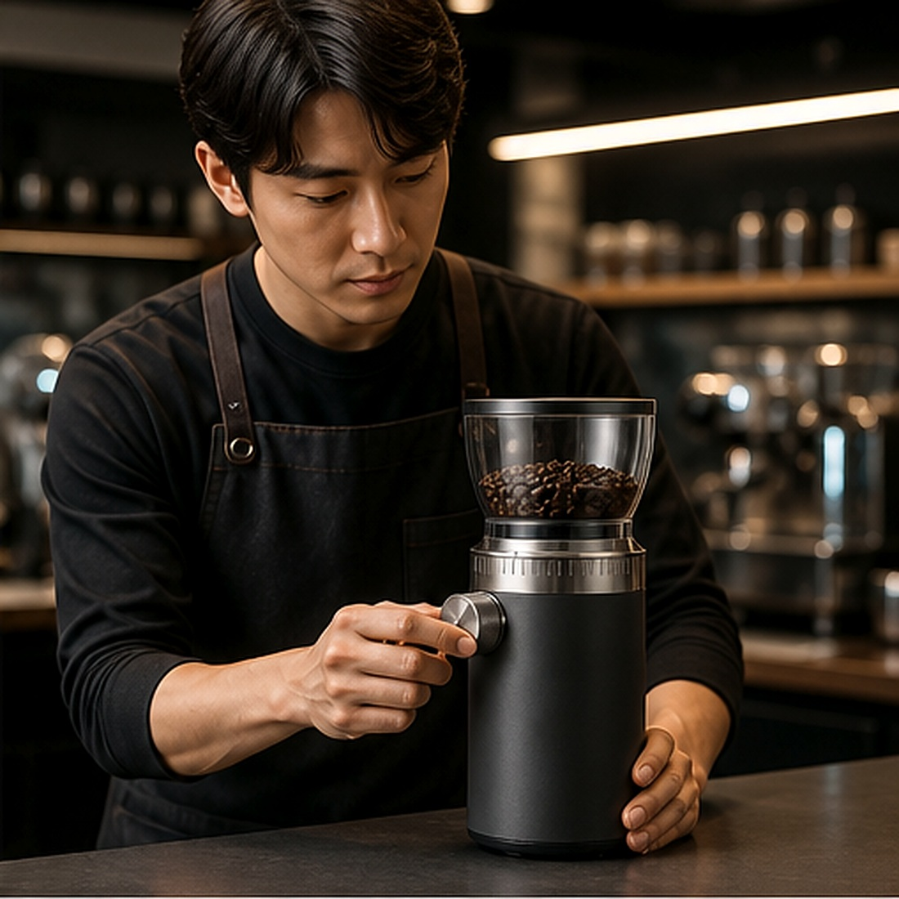
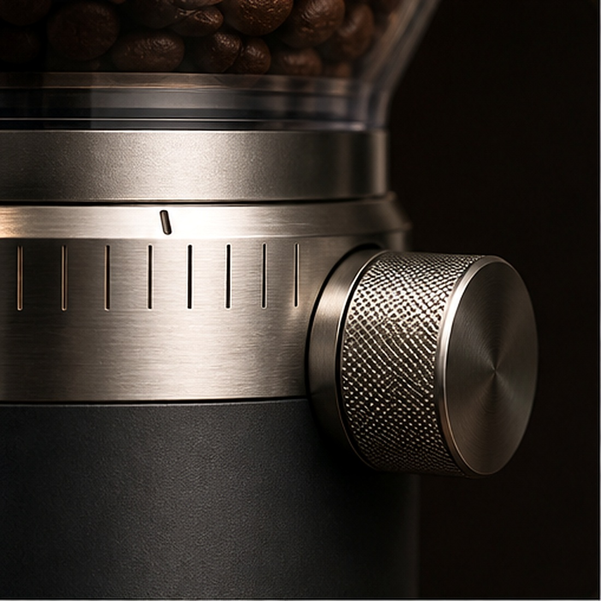
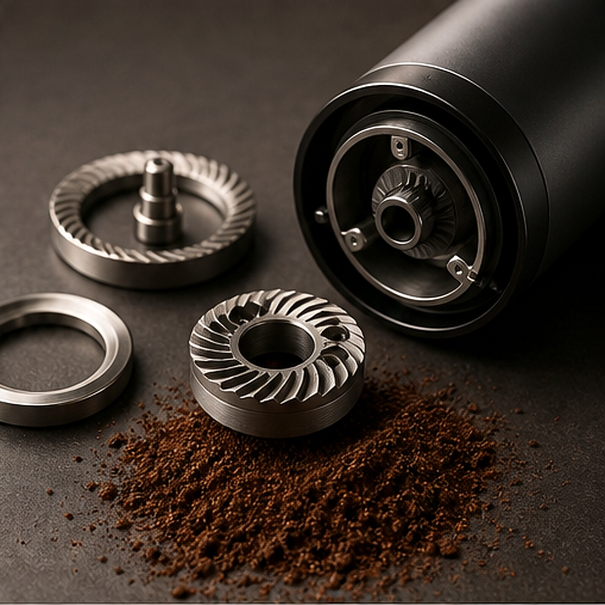
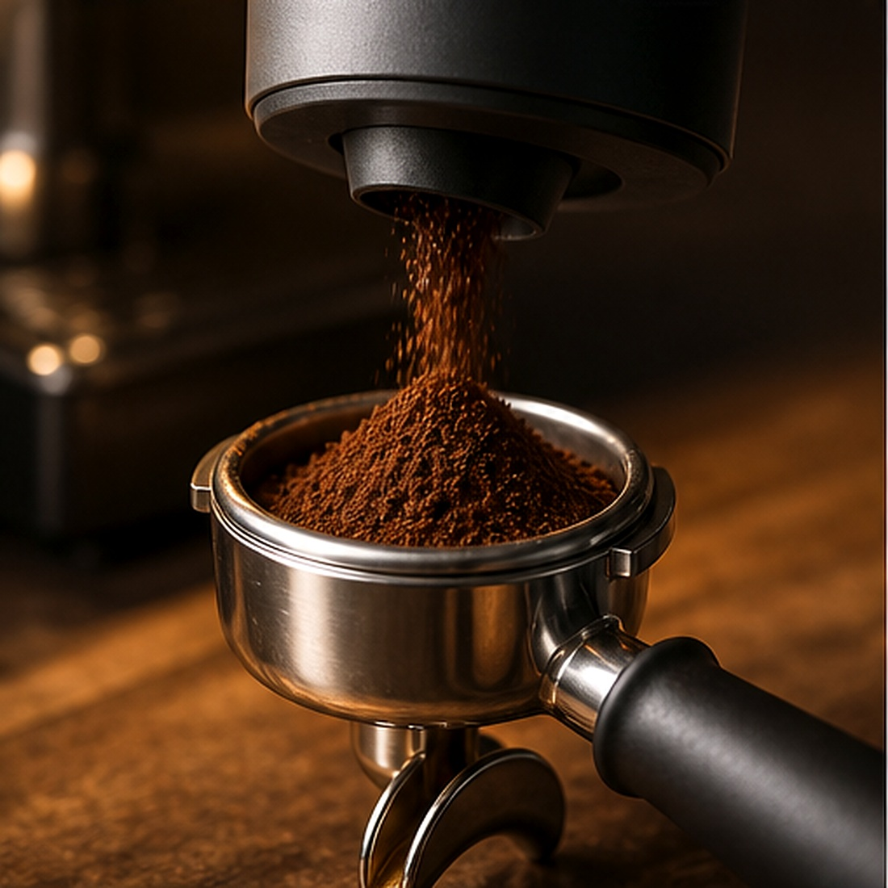

Grind with intention
한 클릭의 차이가한 잔의 균형을 바꿉니다
원두가 가진 밀도와 향을 놓치지 않도록. 손끝의 미세한 조절을 균일한 입자로 바꾸는 정밀 그라인더.
48정밀 분쇄 단계
42mm코니컬 버 시스템
LOW잔량 최소 설계
SCROLL TO CALIBRATE ↓

BARISTA TESTED · SEOULA standard, not a habit
감이 아니라
기준으로
분쇄하다.
“좋은 그라인딩은 더 많은 것을 더하지 않습니다. 원두가 가진 고유한 단맛과 질감을 정확히 꺼내줄 뿐입니다.”
01손끝에서
손끝에서
완성되는
48개의 기준
에스프레소의 섬세한 조정부터 브루잉의 깨끗한 입자까지. 한 칸씩 분명하게 걸리는 클릭감으로 원하는 지점을 기억하세요.

Core mechanism / 02
속도보다
중요한 건
균일함.
절삭면이 원두를 일정한 크기로 분쇄해 미분 발생을 줄이고, 잔의 끝까지 깨끗한 단맛을 유지합니다.

PRECISION CUT
열 발생을 낮춘 정밀 절삭 구조
간편한 분리 세척 설계
열 발생을 낮춘 정밀 절삭 구조
간편한 분리 세척 설계

DIRECT WORKFLOW / 03갈고,
갈고,
바로 담고,
추출하세요.
분쇄컵과 포터필터를 모두 받치는 가변형 홀더. 흔들림 없는 작업 동선으로 아침의 한 잔을 더 간결하게.
높이 조절 포크정전기 억제 토출구원터치 펄스 모드